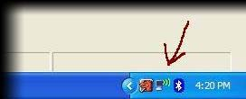
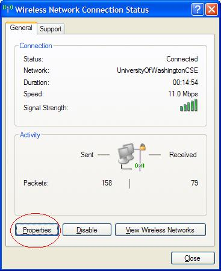
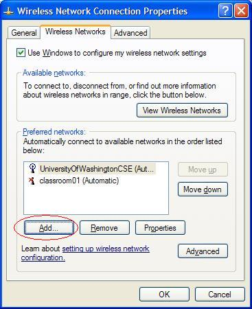
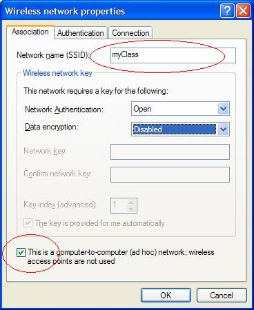
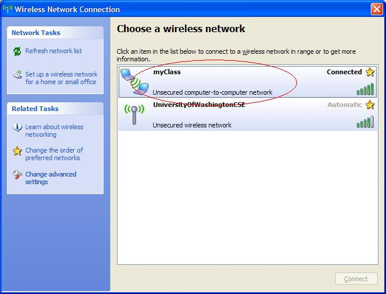
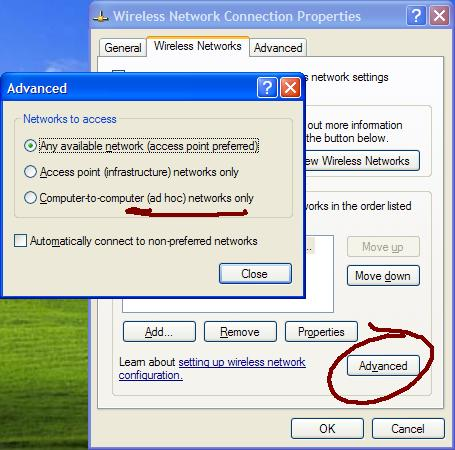

Ad Hoc Networks |
|||||
|
CreatingTo create a new ad hoc network open the Control Panel then select Network Connections, then select Wireless Network Connection. You may also double click on the wireless icon in the system tray (by the clock). Either approach should bring up the Wireless Network Connection Status dialog box: On the Wireless Network Connection Status dialog box, select the Properties button to bring up the Wireless Network Connection Properties dialog box. Click on the Wireless Networks tab then the Add button. A new window will appear. Give your network a name, and check the box at the bottom of the screen indicating that this is an ad-hoc network. In this example we have created a network with WEP disabled. Click OK to close that window and OK again. Be sure to click OK both times in order to save your changes. (If you try to View Wireless Networks before hitting OK the second time, your changes may not be saved, so make sure to click OK twice.) Your ad hoc network is all set up now! ConnectingWhen another machine is in close physical proximity it should be able to see the ad hoc network you created by selecting View Wireless Networks. (Otherwise the network may not appear immediately on the machine where you created it.) You should see your ad hoc network as a computer-to-computer network. You may have to refresh the list. Select your network then click the Connect button near the bottom of the screen. It may take a minute or two to acquire a network address. Note: If you don't see your network, you may have to change your network settings to only connect to ad hoc networks. To do this, click on Change advanced settings. On the new window, click on the Wireless Networks tab, then Advanced. Select the third radio button: "Computer-to-computer (ad hoc) networks only" and click Close, then OK. Open Network Connections again, and follow the steps above to connect to the network. NotesThe details of setting up an ad hoc network on Vista may differ slightly. More information on setting up ad hoc networks can be found here. | ||||